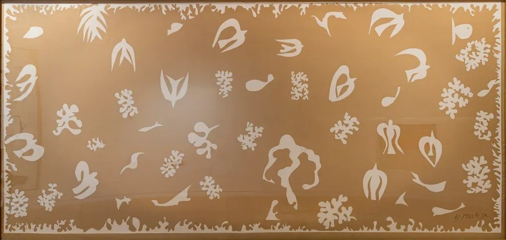
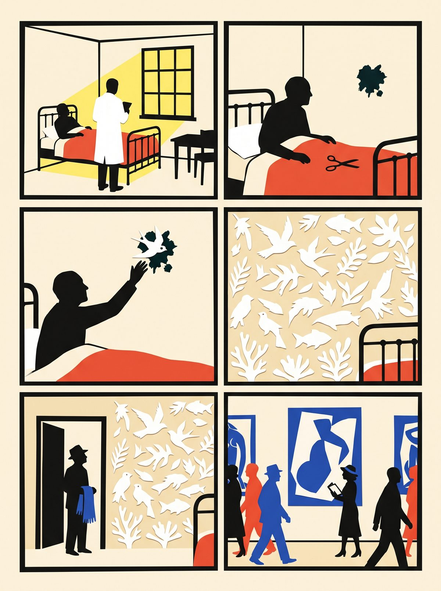

18:45 · three minutes · the last stop; back west along the boulevard and rue de la Gaîté

Henri Matisse, Océanie, le ciel, 1946, printed on linen by Zika Ascher, 1948. Public domain in the EU.
Stand on the pavement opposite the doorway of number 132. A plain residential building, no plaque.
▶ Listen · A swallow over a stain · 4 min
Matisse kept a flat here from the 1930s to the end. In January 1941, aged 71, he had a major cancer operation; he asked the surgeon for three or four years and got thirteen. In the summer of 1946, in this flat, there was a stain on the wall. He cut a swallow out of writing paper and pinned it over the stain. Then another shape, and another, until the whole wall was birds, fish, leaves and coral: Tahiti remembered. A textile maker who called about scarves saw the walls and printed them on linen, thirty copies each.
"Drawing with scissors," he wrote in Jazz in 1947. The cut-outs, the works he is most loved for, began as home repair.
Fun fact
In 1961 the Museum of Modern Art in New York hung his cut-out The Boat upside down for 47 days. About 116,000 visitors walked past it before a stockbroker read the catalogue. The guard: "You don't know what's up and you don't know what's down and neither do we."
Quiz · What did he pin over the stain on this wall in 1946?
A paper swallow. The cut-outs began.
The story in six panels

11941. Matisse, aged 71, after a cancer operation, asks for three or four years.
2Summer 1946, in his flat at number 132. A stain on the wall.
3He cuts a swallow from writing paper and pins it over the stain.
4Then another shape, and another, until the wall is Océanie: sky and sea.
5Zika Ascher calls about scarves, sees the walls, prints them on linen: 30 copies.
61961, New York. MoMA hangs his cut-out The Boat upside down for 47 days. Nobody notices.
Drawn in paper-cut style with Gemini from our script; no real person is depicted.